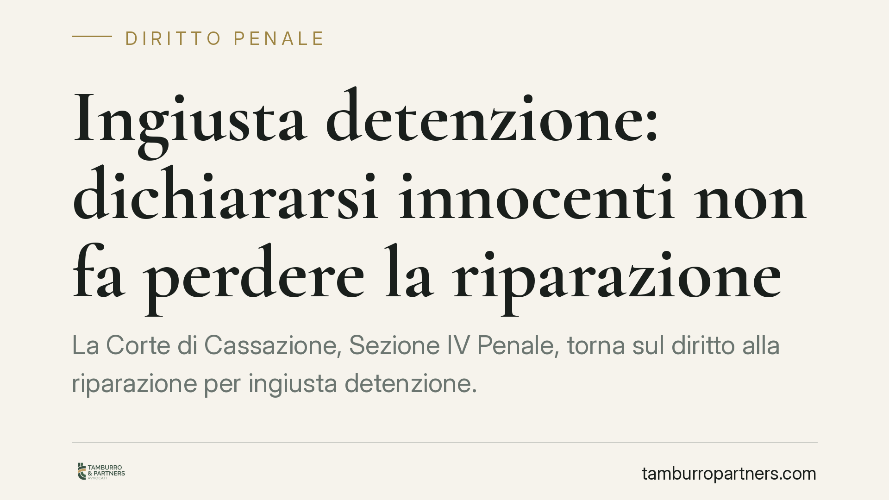

Ingiusta detenzione: dichiararsi innocenti non fa perdere la riparazione
La Corte di Cassazione, Sezione IV Penale, torna sul diritto alla riparazione per ingiusta detenzione. Dichiararsi innocenti o estranei alle accuse non può far perdere il risarcimento: è esercizio del diritto di difesa, non colpa che esclude l'indennizzo. Una precisazione che pesa su chi ha subito una custodia poi rivelatasi ingiusta.

Il caso
La vicenda nasce da una decisione della Corte di Appello di Napoli, chiamata a valutare la domanda di riparazione presentata da chi aveva subito una custodia cautelare poi non seguita da condanna. Il punto controverso: l'atteggiamento tenuto dall'interessato durante il procedimento, in particolare l'aver affermato con fermezza la propria innocenza, poteva essere letto come elemento capace di escludere o ridurre il diritto all'indennizzo?
La Cassazione risponde in modo netto. Affermare la propria estraneità ai fatti non è una condotta "ostativa": è l'esercizio pieno e legittimo del diritto di difesa, garantito a chiunque sia sottoposto a un procedimento penale. Non può quindi trasformarsi in una ragione per negare la riparazione.
Inquadramento normativo
La materia è regolata dall'art. 314 del codice di procedura penale, che riconosce il diritto a un'equa riparazione a chi sia stato sottoposto a custodia cautelare e poi prosciolto, assolto o non condannato, purché non abbia dato causa alla detenzione con dolo o colpa grave.
Proprio su quest'ultima clausola si concentra la pronuncia. La legge esclude l'indennizzo quando l'interessato ha contribuito, con comportamenti gravemente imprudenti o volutamente reticenti, a determinare o mantenere la propria custodia. Ma la difesa dell'innocenza è l'opposto della colpa: chi nega gli addebiti non sta ingannando né depistando, sta usando una facoltà che l'ordinamento gli riconosce.
La Corte, in linea con un orientamento ormai consolidato, distingue con chiarezza tra condotta processuale legittima e condotta colpevole. Solo la seconda può incidere sul diritto alla riparazione. L'esercizio del diritto al silenzio, la scelta di non collaborare o l'affermazione della propria estraneità rientrano nel perimetro della difesa e non possono essere ritorti contro chi li ha esercitati.
Cosa cambia per chi ha subito custodia cautelare
La decisione ha ricadute concrete per chiunque abbia trascorso un periodo in custodia cautelare — in carcere o agli arresti domiciliari — e sia poi uscito dal procedimento senza condanna.
Il messaggio è duplice. Da un lato, la scelta difensiva di negare gli addebiti non pregiudica la successiva richiesta di riparazione. Dall'altro, resta fermo il vaglio sulla colpa grave: la valutazione del giudice si sposta sui comportamenti effettivamente idonei a fuorviare le indagini, non sulle posizioni difensive.
È una distinzione tecnica ma decisiva. Chi ha affermato la propria innocenza non deve temere che quella scelta si trasformi, in sede di riparazione, in un ostacolo. Al contrario, l'analisi si concentra su elementi diversi: false dichiarazioni finalizzate a sviare, occultamento di prove, condotte reticenti che abbiano concretamente indotto in errore l'autorità procedente.
Restano invariati i termini e le condizioni della domanda, che va proposta alla Corte d'Appello competente entro i limiti previsti dalla legge. La pronuncia non amplia i presupposti del diritto: chiarisce che la legittima difesa non li restringe.
Cosa fare in concreto
- Verificate i termini. La domanda di riparazione ha scadenze rigorose che decorrono dal momento in cui il provvedimento favorevole diventa definitivo: controllate subito la data di irrevocabilità.
- Ricostruite la vicenda cautelare. Raccogliete i provvedimenti che hanno disposto e mantenuto la custodia, insieme all'esito finale del procedimento.
- Distinguete difesa e colpa grave. Documentate le vostre scelte difensive: negare gli addebiti non è colpa. Preparatevi invece a rispondere su eventuali contestazioni di condotte reticenti.
- Quantificate il pregiudizio. Annotate durata della detenzione, condizioni personali, professionali e familiari incise dalla custodia: sono elementi rilevanti per l'entità dell'indennizzo.
- Consigliamo di rivolgervi a un difensore prima di presentare la domanda, per valutare la fondatezza della richiesta e impostarla correttamente.
La pronuncia rafforza un principio di civiltà giuridica: chi si difende non può essere penalizzato per averlo fatto. La riparazione per ingiusta detenzione non è un premio alla collaborazione, ma un rimedio a un sacrificio della libertà che si è rivelato non giustificato.
*Contributo informativo a cura di Tamburro & Partners - Avv. Giuseppe Tamburro. Non costituisce parere legale.*
Ogni condominio ha una storia a sé.
Se gestisci un'amministrazione e vuoi un confronto su una specifica questione condominiale, scrivi allo studio. Ti rispondiamo entro un giorno lavorativo.